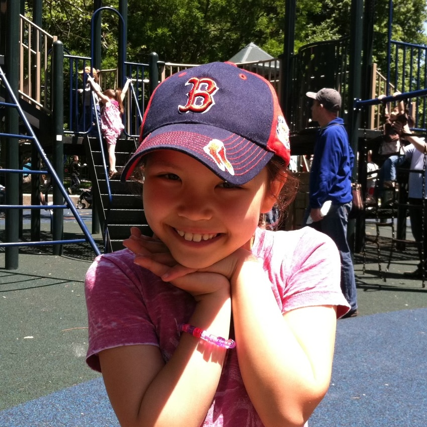

incoming phd student @ harvard
outside the lab, you can usually find me reading: i love all kinds of fiction, poetry, philosophy, and feminist theory. for three years, i was a bookseller and barista at belmont books in belmont, ma, and consequently feel passionately about supporting local indie bookstores! you can also find me swimming at walden pond, where i grew up about 20 minutes from.
i also get a lot of joy from: ceramics, (hot) yoga, creative writing, playing piano, and taking long walks listening to yacht rock (my spotify listening age this year was 70!).
some of my favorite memories from undergrad include saturday mornings at the shoe (ohio stadium) with friends, mentoring first-year students at a local high school, friday brunches living in my sorority house, and "locking in" at thompson library.